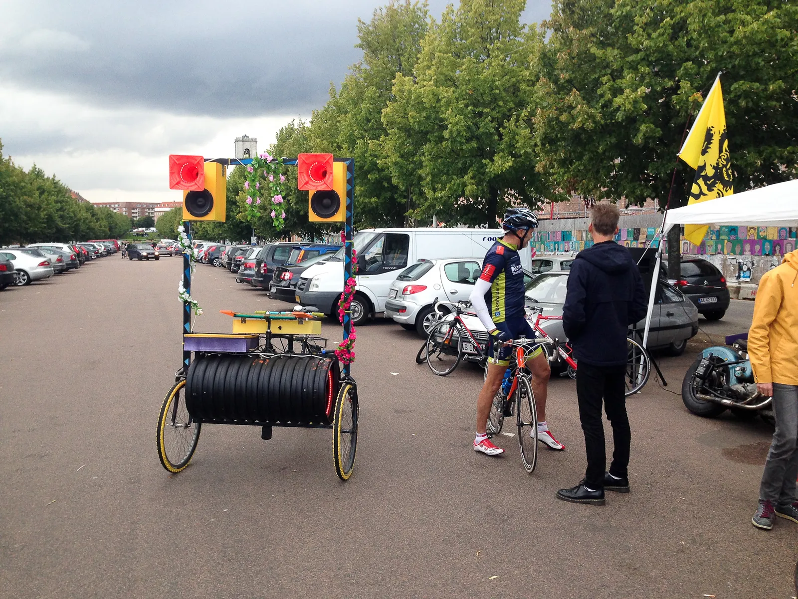
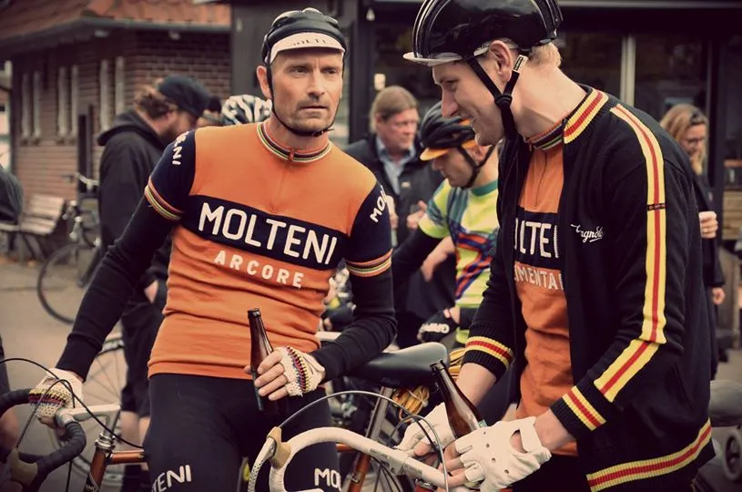
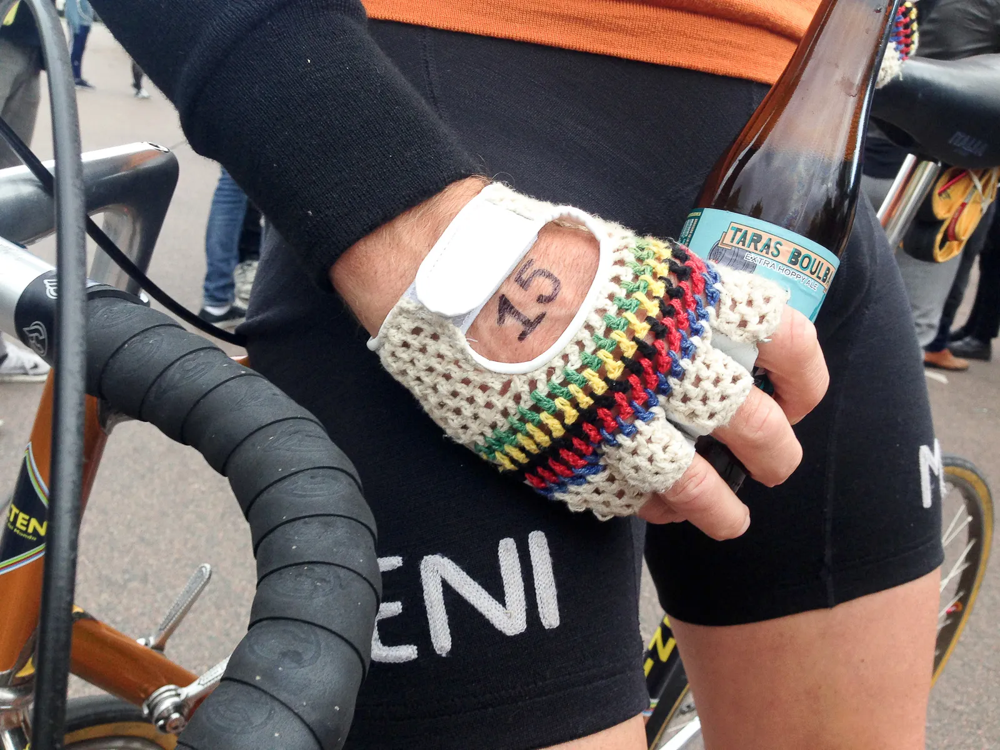
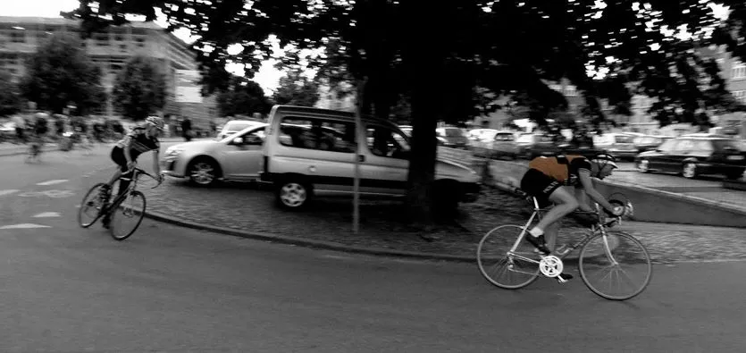
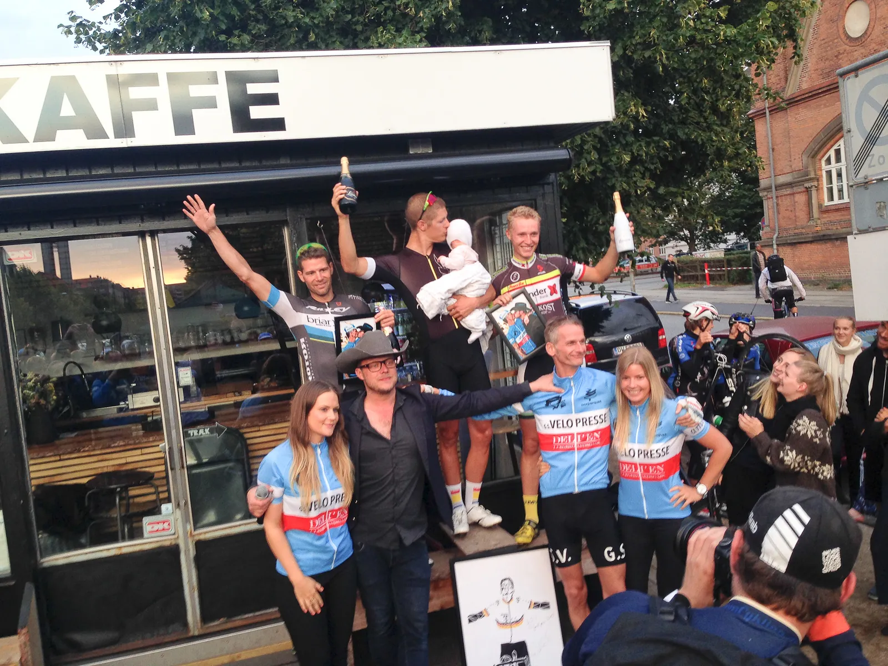

Løbsberetning: GSV Grand Prix 2015

Grand Prix GS Velopresse (GSV Grand Prix) er løbet hvor intet aftalt, og alt er på spil. Kaptajn Niels Bjørnsteen og løjtnant Kasper Sørensen repræsenterede her til aften Squadra Molteni i et vaske ægte undergrunds gadeløb i den Aarhusianske midtby.
“Ham der kommer først vinder, og resten er tabere“, blev der gentaget flere gange, før løbet blev skudt i gang ca. kl. 19. GSV Grand Prix
G.S. Velopresse arrangeres for fjerde år i træk midt i Aarhus by, midt i Aarhus Festuge.

Der køres 11 omgange af ca. 1100 meter rundt på Ingerslev Boulevard. Løbet køres hvert år, og der er altid garanti for god stemning og fede billeder.
Første omgang med masterknallert og 40 i timen. I feltet er der proffer, neoproffer, gamle proffer og wannabe proffer.
GSV Grand Prix er lige noget for Squadra Molteni
Il Dottore, chefen for G.S. Velopresse, fyrede allerede fra kl. 17 godt op under festlighederne, og inviterede alle fremmødte til at skrive sig på startlisten, eller blot nyde en lille en, eller tyve, i baren.
Squadra Molteni tog selvfølgelig imod tilbudet, og startede med en kulsort, og skummende, belgisk øl.




“Der bliver lukket op fra starten og der bliver kørt stærkt.
PISSE STÆRKT!” – fortæller arrangørerne på begivenhedens hjemmeside.
Med lungerne uden på uldtrøjen
Kasper startede bagerst i feltet, og der gik et par omgange med at vænne sig til de skarpe venstre sving.
– Det var en ordentlig mølle der skulle trædes i gang efter hvert sving, i starten skiftede jeg gear, men det blev squ for bøvlet at skulle ned på skrårøret hver gang.
Efter et par omgange fandt jeg et godt tungt gear, og så var det bare om at træde, fortæller han.

Niels havde fundet en plads næsten helt fremme ved startstregen
– Jeg havde møvet mig godt frem i feltet inden start, og da feltet hamrede ud på første rigtige omgang, gik det sindsygt stærkt.
Efter hvert sving sprintede jeg 50 – 100 meter, for at lukke hullet op til den gruppe jeg lå i, fortæller Niels.
Kasper startede lidt tilbage i feltet, og det var først ca. halvvejs, at Kasper fik kontakt til Niels’ gruppe.
Det perfekte TV-udbrud
Med 4 omgange igen stak Niels på mållangsiden. Et perfekt sted for et TV-udbrud.
På modsatte langside var Niels dog over det røde felt, og måtte med det yderste af neglene hægte sig på det indhentende felt igen.
Kort efter forsøgte Kasper at sætte tempoet på langsiden, men det kostede kræfter, og han var tæt på at blive hægtet af efterfølgende.
– Tilsidst var det rent tunnelsyn, jeg mistede helt overblikket over hvor mange omgange jeg havde kørt.
Jeg kunne kun tænke på at træde til, vælge den hurtigste linje i svinget, og holde den belgiske øl nede i maven, fortæller Kasper, som endte med at køre næsten en hel omgang for meget.
Grand Prix G.S. Velopresse – et fedt arrangement der hylder cykelløbet og alt hvad dertil hører.
En fantastisk tilføjelse til kalenderen.
